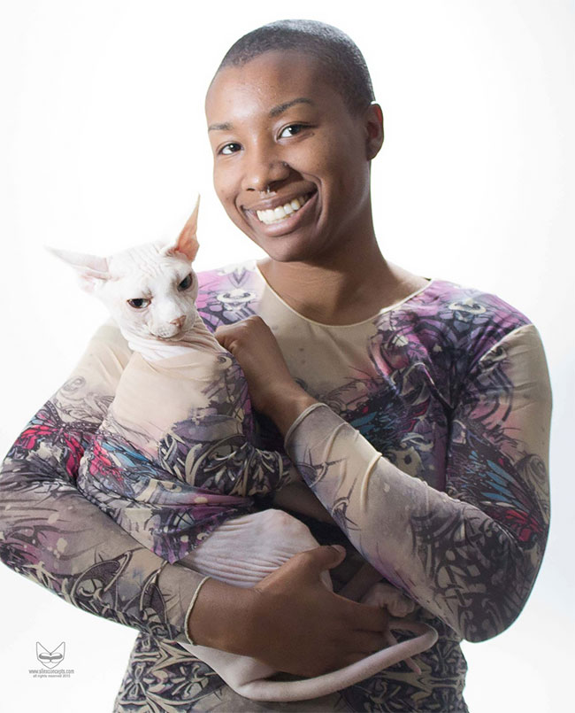

Katie Perry
5
Anne Marie is by far our first choice when we need a dog sitter.
We have used her service on several occasions the last one for a period of three weeks.
Read More
Felix Kjellberg
4
I highly recommend Anne Marie! My two cats received the care and attention they needed, and my house was very well kept!
In fact, it seemed cleaner when I returned, than the day I left for our trip.
Read More
Sarah Hyland
3.5
4
I highly recommend Anne Marie! My two cats received the care and attention they needed, and my house was very well kept!